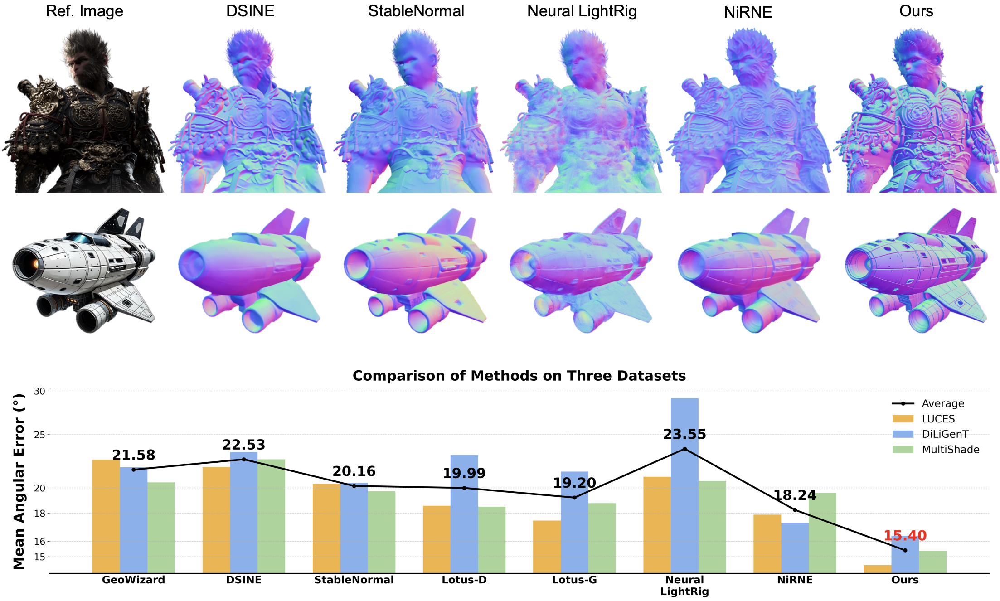
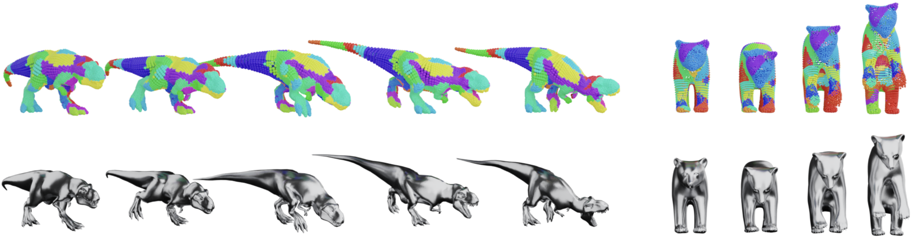

Zongrui Li
Short Bio
I am a fourth-year Ph.D. student at the Rapid-Rich Object Search Lab (ROSE) at Nanyang Technological University (NTU), supervised by Prof. Jiang Xudong and Dr. Qian Zheng. I received the Master degree at the School of Electrical and Electronic Engineering, NTU, majoring in computer control and automation, and the Bachelor degree at the School of Traffic and Transportation, Beijing Jiaotong University (BJTU), majoring in Intelligent Transportation Engineering.
My research interests are broad due to my interdisciplinary background. Previously, I was mainly working on reinforcement learning and multi-agent systems. Now, I focus more on computer vision and computer graphics, working on projects involving PBR, photometric stereo, NeRF, and generative model (especially for 3D generation).
Research Interests
- Computer Vision: Photometric stereo, representation learning, 3D perception
- Computer Graphics: PBR, inverse rendering, NeRF
- Generative Models: 3D generation, diffusion, consistency distillation
- Reinforcement Learning: Multi-agent systems (previous work)
Working Experiences
- Sep. 2025 - Jun. 2026, Research intern at MiroMind, Singapore.
- Apr. 2025 - Sep. 2025, Research intern at TikTok, Singapore.
- Aug. 2020 - Aug. 2021, Research intern at Institute for Infocomm Research (I2R), A*STAR, Singapore.
- Apr. 2019 - Apr. 2020, Research intern at Institute of Software, Chinese Academy of Sciences, China.
News
- [Jan. 2026] Will join NTU as a postdoctoral researcher in March under Prof. Jiang Xudong.
- [Jan. 2026] One Paper accepted to ICLR 2026 🎉🎉
Selected Publications [ Google Scholar]
# corresponding author, * equal contribution.
-
 ICLR 2026Monocular Normal Estimation via Shading Sequence EstimationInternational Conference on Learning Representations (ICLR), 2026
-
 arXiv
-
 TPAMI
IEEE Transactions on Pattern Analysis and Machine Intelligence (TPAMI), 2025
TPAMI
IEEE Transactions on Pattern Analysis and Machine Intelligence (TPAMI), 2025 -
 ECCV 2024
European Conference on Computer Vision (ECCV), 2024
ECCV 2024
European Conference on Computer Vision (ECCV), 2024 -
 CVPR 2024
IEEE/CVF Conference on Computer Vision and Pattern Recognition (CVPR), 2024
CVPR 2024
IEEE/CVF Conference on Computer Vision and Pattern Recognition (CVPR), 2024 -
 CVPR 2023
IEEE/CVF Conference on Computer Vision and Pattern Recognition (CVPR), 2023
CVPR 2023
IEEE/CVF Conference on Computer Vision and Pattern Recognition (CVPR), 2023 - Conference Reviewer: CVPR, AAAI, WACV, NeurIPS, ICIVC.
Professional Services
Contact
Affiliation: Rapid-Rich Object Search Lab (ROSE), Nanyang Technological University
Email: